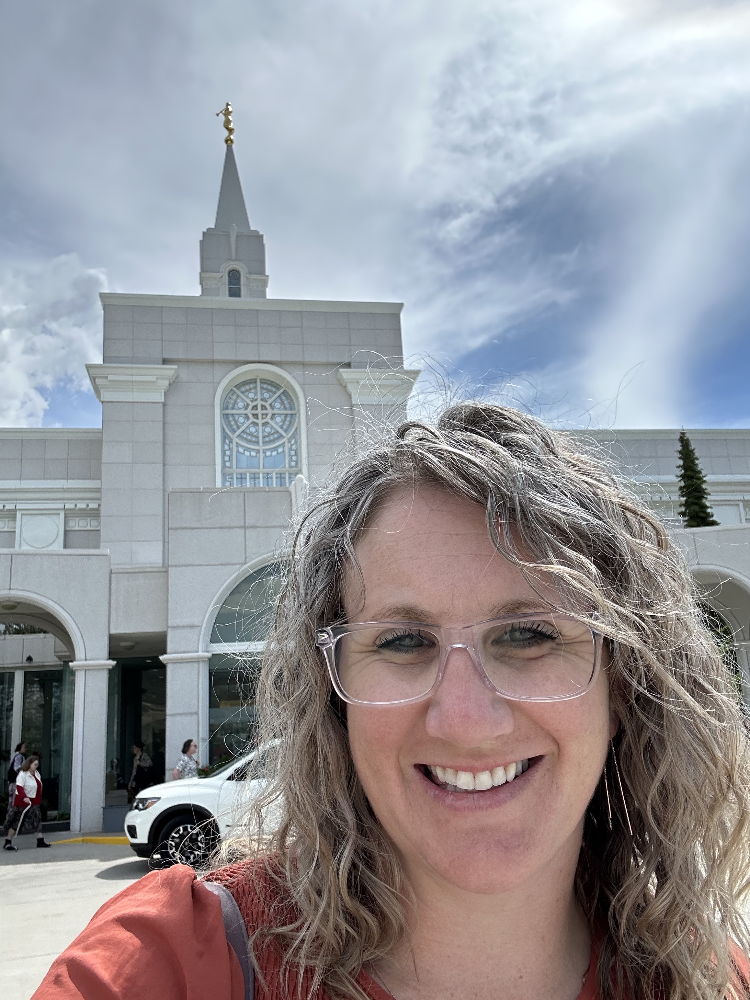

Ashley Gibbons | WDD 130
Hello! My name is Ashley Gibbons. I am from Louisiana and currently live in Utah. My husband and I have been married for 21 years and have 6 children. I have 5 daughters and 1 son. My son is currently serving a mission speaking spanish in the Bismark, ND mission. I love going to the temple with my husband and hope all my family can be in the temple together one day. I also enjoy spending time with my family playing board games, going on hikes, and making things with my hands. I am looking forward to learning more and working toward earning my bachelor's degree.